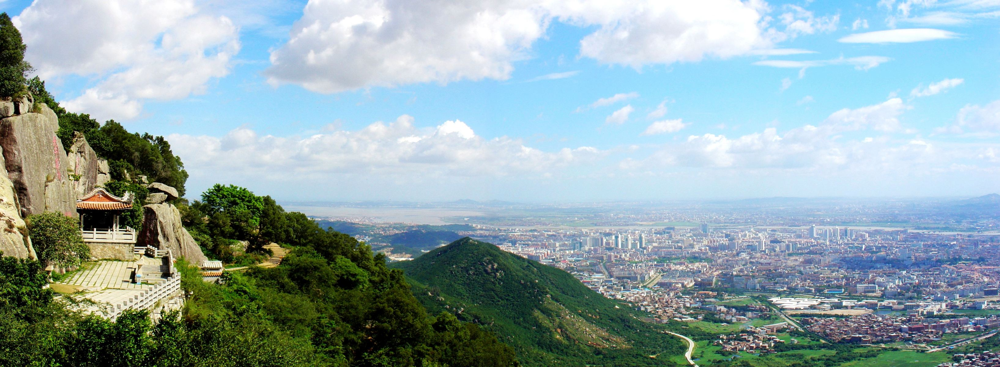

介绍
清源山位于泉州市北郊，俗称“北山”，主景区距离泉州市区3公里，交通很方便。
清源山是泉州第一个5A级景区，可以算是泉州的标志性景点了。山并不高，所以大可不必把清源山的行程当做爬山之旅，可能用休闲锻炼来形容会更加合适一点。
据泉州府志记载，清源山最早开发于秦代，唐代“儒、道、释”三家竞相占地经营，所以景区内有着 “儒、道、释”三家的各种旧迹，可以一一体会。
整座山亮点就是位于山下的老君岩，也就是老子的雕塑，它雕刻的栩栩如生，且有千年的历史。它是我国现存雕技最绝、年代最久的道教石雕造像。
清源山景区内还有着与闽南有着深厚渊源而安身在此的弘一大师舍利塔，塔内有壁丰子恺先生悲切所作的泪墨画，塔前还有大师生前的遗墨“悲欣交集”。
清远山的人文景观要胜于自然景观，这里有非常多的历代摩崖石刻，可以循着地图一块一块去找寻古人的“到此一游”。
除了看人文景观和爬山锻炼，清源山的魅力却不仅仅如此，在山中喝茶和在山顶吃喝也是种独特的乐趣。登山途中有不少休息泡茶的地方，你可以停下脚步喝点茶，慢慢品味闽南文化。在山上泡茶，观景品茗不亦乐乎。
山顶有一座名叫天湖的湖，在湖边上可以吃当地的农家乐，农家乐的价格都不贵且味道不错。快天黑的时候还有人在山上吃烧烤，据说是当地人经常有的生活方式。
另外，从山顶还可以从上往下俯瞰泉州古城。

开放时间
全年 08:00-17:30开放
优待政策
儿童：1.2米以下（含）儿童或者6周岁以下儿童，免费；6周岁（不含6周岁）-18周岁（含18周岁）未成年人，半价
军人：现役军人，军退，凭有效证件，免费
老人：泉州地区60周岁以上老年人，外地65周岁以上老人，免费；泉州地区以外60周岁（含60周岁）-65周岁（不含65周岁）的老年人凭身份证，半价
学生：全日制大学本科及以上学历学生凭有效学生证，半价
记者/劳模/高级人才：记者凭记者证，劳模凭劳模证及五一奖章，免费
残疾人：残疾证、残疾军人证，免费
高级人才：高级人才证，免费
导游：导游证带团时免费，免费
教职工：人民教师（凭教师资格证），半价